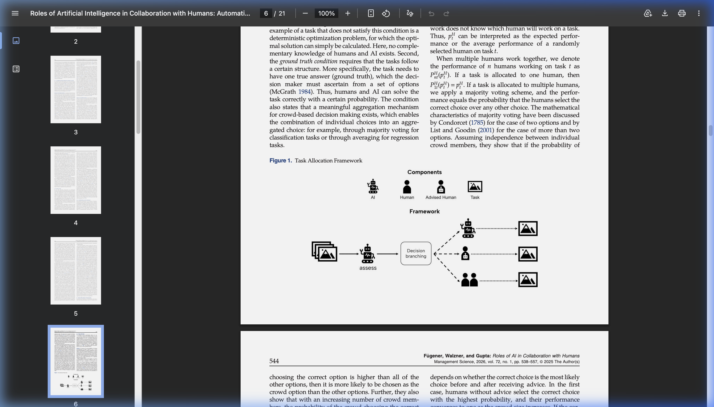
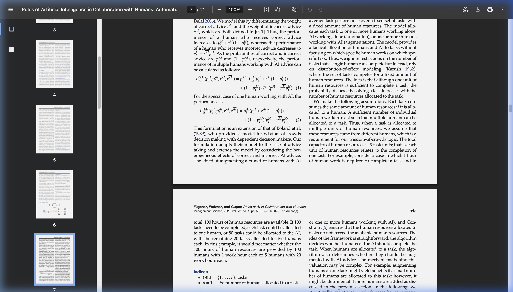
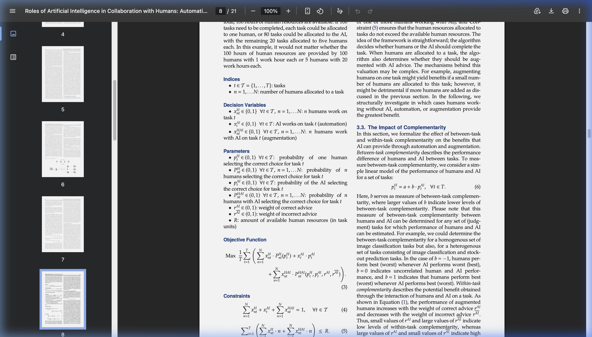
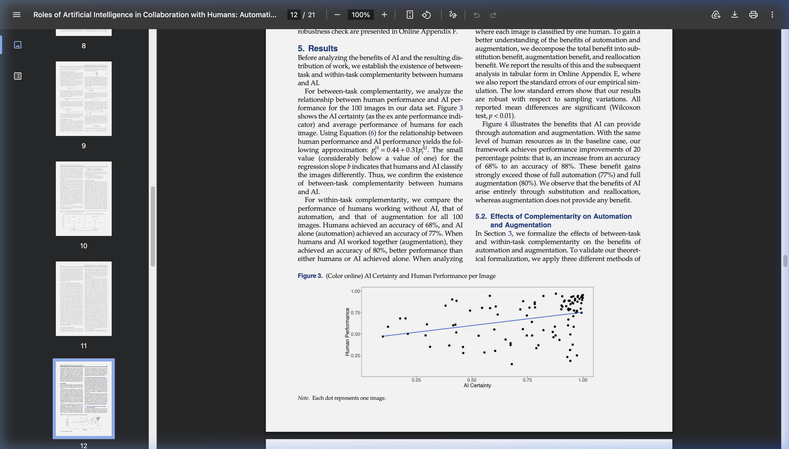
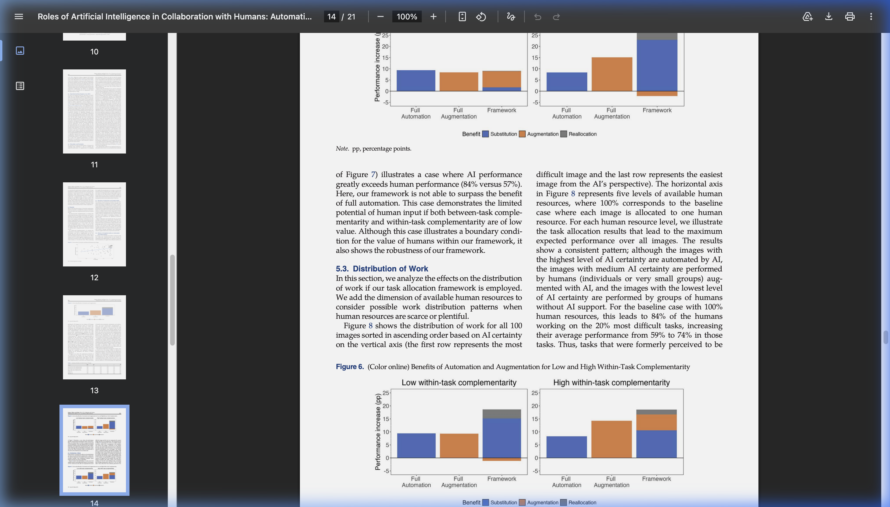
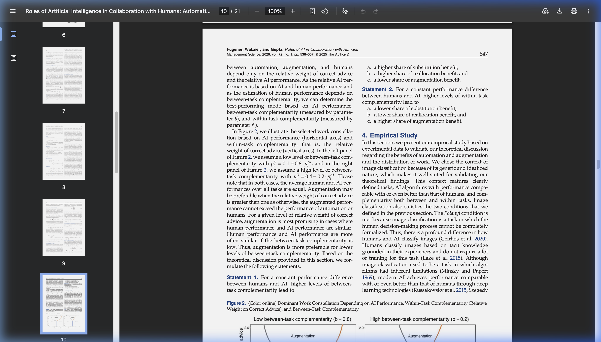
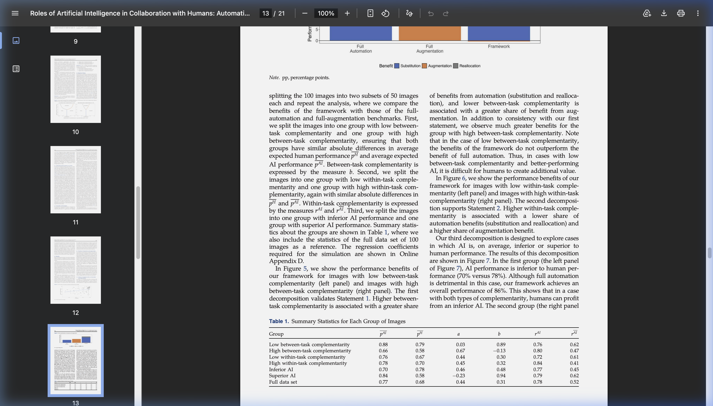
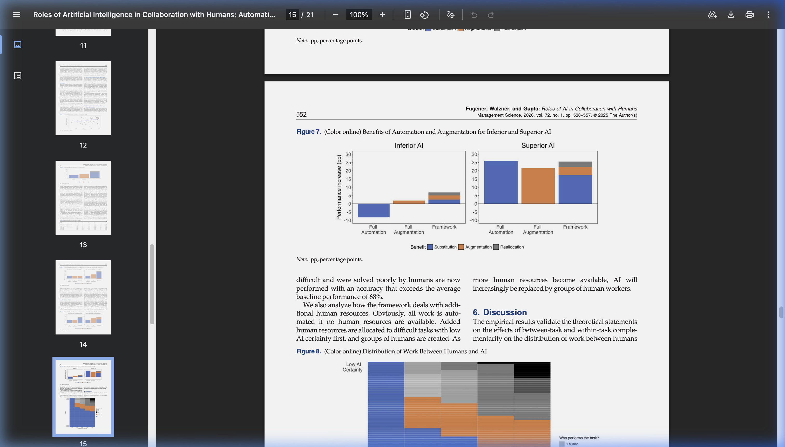

Week 7: Analytical Modeling in IS Research
🎯 This Week's Focus
Week 7 is a guest researcher week. Dr. Zhiling Guo from Singapore Management University visits and presents her work. All four papers this week use mathematical/analytical methods — game theory, empirical causal identification, or optimization-based task allocation. The masterclass slides explain what analytical modeling is and why it counts as legitimate IS research. Key question: How can IS research answer questions that surveys and experiments cannot?
📋 This Week's Requirements (Feb 24, 2026)
- Article critique due: One paper of your choice from this week's readings.
- Paper draft due: Full draft of your research paper is due this week (Week 7).
- Read all five items (4 papers + masterclass slides) and be ready to discuss the research method in class.
- Focus question: What makes analytical modeling a valid research method? What can it do that empirical methods cannot?
🔗 فهرست سریع - Quick Navigation
Papers at a Glance
| Paper | Research Question | Method | Key Finding |
|---|---|---|---|
| MISQ Masterclass (2023) | What is analytical modeling and how do you do it? | Tutorial / Methodology | 3 types: Game Theory, OR, Optimal Control. Nash Eq. is the core solution concept. |
| Chen & Guo (2022) — MISQ | How does low-cost new-media advertising affect platform openness? | Game Theory (3-stage sequential) | Cheap advertising pressures Amazon to OPEN its platform — counter-intuitive. |
| Chen, Guo & Huang (2022) — ISR | When is it rational to offer rebates conditional on positive reviews? | Game Theory (2-period) | Conditional rebates can INCREASE social welfare even when they generate fake reviews. |
| Luo, Ge & Wang — MISQ | Does Kiva crowdfunding help microfinance institutions? | Empirical — Difference-in-Differences | Kiva partnership improves MFI sustainability and lowers borrower interest rates. |
| Fügener, Walzner & Gupta (2026) — Mgmt Sci | When should AI automate vs. augment humans in judgment tasks? | Analytical Modeling + Empirical Validation | Combined framework (88%) beats humans (68%), automation (77%), and augmentation (80%). Pattern: AI automates easy, augments medium, crowds handle hard tasks. |
📐 Analytical Modeling in IS Research
MISQ Masterclass Series — May 17, 2023
📝 Citation
MISQ Masterclass Series (2023, May 17). Analytical Modeling in IS Research. MIS Quarterly Masterclass Presentation Slides.
📚 توضیح فارسی — مدلسازی تحلیلی چیست؟
🔴 مشکل اصلی این هفته چیست؟ این هفته با یک روش تحقیق کاملاً متفاوت روبرو میشویم. تا حالا ما با پژوهش پوزیتیویستی آشنا بودیم — جایی که داده جمع میکنیم (نظرسنجی یا آزمایش) و با آمار تست میکنیم. این هفته روش دیگری است: مدلسازی تحلیلی. در این روش اصلاً داده جمع نمیکنیم. به جایش معادله مینویسیم و ریاضی به ما جواب میدهد.
🎯 چرا این روش وجود دارد؟ بعضی سوالات را نمیتوان با داده واقعی جواب داد. مثال ساده: فرض کن میخواهی بدانی «اگر آمازون کمیسیونش را ۵٪ بالا ببرد، فروشندگان چه میکنند؟» نمیتوانی یک آزمایش بکنی چون آمازون واقعاً این کار را نکرده. اما اگر یک مدل ریاضی داشته باشی که رفتار فروشنده را توصیف کند، میتوانی با حساب کردن جواب بگیری. این قدرت اصلی مدلسازی تحلیلی است.
📖 تفاوت سه نوع:
- تئوری بازی (Game Theory): وقتی چند بازیگر داریم که هر کدام سود خودشان را بیشینه میکنند و تصمیمهایشان به هم وابسته است. مثلاً آمازون و فروشنده، یا دو رقیب. هفته ۷ دو پیپر از این نوع دارد.
- OR / بهینهسازی: وقتی فقط یک تصمیمگیرنده داریم که میخواهد بهترین انتخاب را بکند. مثلاً یک شرکت که میخواهد بهترین بودجه IT را تعیین کند.
- کنترل بهینه: مثل بهینهسازی ولی در طول زمان. مثلاً چند سال برنامهریزی برای سرمایهگذاری IT.
⚡ نکته کلیدی برای امتحان: وقتی استاد میپرسد «چرا این پیپر از تئوری بازی استفاده کرد؟»، جواب این است: چون دو بازیگر مستقل وجود دارند که سود خودشان را بیشینه میکنند و تصمیم یکی روی دیگری اثر میگذارد. این وضعیتی است که فقط Game Theory میتواند به درستی مدل کند.
🧠 Nash Equilibrium یعنی چه؟ فرض کن دو نفر (A و B) بازی میکنند. وقتی به تعادل نش رسیدیم، یعنی: اگر A استراتژیاش را عوض کند، فقط به خودش ضرر میزند (با فرض اینکه B عوض نمیکند). پس هیچکدام انگیزهای برای تغییر ندارند. این ثبات استراتژیک است. در دو پیپر این هفته، ما این تعادل را حساب میکنیم و از روی آن نتیجهگیری IS میکنیم.
💡 نکته مهم برای نقد این نوع پیپر: وقتی میخواهی یک پیپر تحلیلی را نقد کنی، به جای اینکه بپرسی «آیا دادهها درست است؟»، باید بپرسی: آیا فرضهای مدل منطقی هستند؟ مثلاً آیا واقعاً مصرفکنندگان rational هستند؟ آیا اطلاعات کامل است؟ این فرضها زیربنای همه چیز هستند.
🎯 Core Question
English: What is analytical modeling, when should IS researchers use it, and how does it contribute to theory?
فارسی: مدلسازی تحلیلی چیست، چه زمانی باید از آن استفاده کرد، و چگونه به نظریهپردازی IS کمک میکند؟
📊 Three Types of Analytical Modeling in IS
| Type | When to Use | Solution Concept | Example Problem |
|---|---|---|---|
| Game Theory | Multiple rational players, each maximizing their own payoff strategically | Nash Equilibrium, Subgame-Perfect NE, Bayesian NE | Platform openness, pricing wars, review manipulation |
| Operations Research / Decision Theory | One decision-maker optimizing an objective function; no strategic interaction | Maximization / Minimization (calculus, Lagrange) | Optimal IT investment, staffing decisions, project scheduling |
| Optimal Control | Dynamic decisions that change over time across a planning horizon | Pontryagin's Maximum Principle, Bellman's dynamic programming | How firms should shift IT budget allocations over quarters |
🎮 Game Theory: Key Concepts
A game has three elements:
| Element | Symbol | Meaning | Example (Week 7) |
|---|---|---|---|
| Players | N | Who makes decisions? | Amazon + Third-Party Seller |
| Strategy space | Si | What choices does each player have? | Open/Close platform; Join/Advertise; Set price |
| Payoff function | ui | What does each player maximize? | Each player's profit |
Nash Equilibrium — Definition
Strategies (s₁*, s₂*, …, sₙ*) form a Nash Equilibrium if no player can increase their payoff by unilaterally changing their own strategy, given the other players keep theirs fixed. Everyone is playing their best response.
Types of Games by Information Structure
| Game Type | Timing | Info | Solution Concept |
|---|---|---|---|
| Static, complete info | Simultaneous | All payoffs known | Nash Equilibrium |
| Dynamic, complete info | Sequential | All payoffs known | Subgame-Perfect NE (backward induction) |
| Static, incomplete info | Simultaneous | Some private info | Bayesian NE |
| Dynamic, incomplete info | Sequential | Some private info | Perfect Bayesian Equilibrium |
💡 Why Analytical Modeling Belongs in IS Research
- Counterfactual questions: "What would happen IF Amazon changed its policy?" — no data exists for this, but a model can answer it
- Causal mechanism: Analytical models explain the WHY, not just the WHAT. They show the mathematical logic behind observed patterns
- Counter-intuitive insights: The best analytical papers find results that surprise us — like "cheap advertising makes Amazon more, not less, willing to share its platform"
- Generates testable hypotheses: Analytical predictions that empirical papers later test with real data
⚠️ How to Review an Analytical Paper (vs. Positivist)
| Criterion | Positivist Paper | Analytical Paper |
|---|---|---|
| Evidence | Survey / experimental data, statistics | Mathematical proofs and lemmas |
| Key question | "Are the hypotheses supported by the data?" | "Are the assumptions reasonable and are the proofs correct?" |
| Contribution check | New empirical finding | Novel mechanism or counter-intuitive proposition |
| Generalizability | External validity, sample size | Do the model's assumptions cover enough realistic cases? |
🛒 Chen & Guo (2022) — New-Media Advertising and Retail Platform Openness
MIS Quarterly, 46(1), 431–456
📝 Citation
Chen, J., & Guo, Z. (2022). New-media advertising and retail platform openness. MIS Quarterly, 46(1), 431–456.
📚 توضیح فارسی — بازی آمازون و فروشنده چطور کار میکند؟
🔴 منطق اصلی را قدم به قدم درک کنیم:
تصور کن یک فروشنده کوچک (مثلاً یک کارخانه کوچک کفش) میخواهد آنلاین بفروشد. دو گزینه دارد:
- گزینه ۱: به آمازون بپیوندد و کمیسیون بدهد. مزیت: همه مشتریان آمازون او را میبینند.
- گزینه ۲: سایت خودش را داشته باشد ولی با تبلیغات (مثل فیسبوک ادز) مشتری جذب کند.
🤔 حالا آمازون چه میکند؟ آمازون هم باید تصمیم بگیرد: پلتفرم را باز کند (اجازه بدهد رقبا بفروشند) یا نه.
🔑 نقطه کلیدی: وقتی تبلیغات آنلاین گران بود (۱۰ سال پیش)، فروشنده کوچک نمیتوانست به تنهایی رقیب آمازون باشد. آمازون میتوانست پلتفرمش را ببندد. اما الان با فیسبوک ادز و گوگل ادز ارزان، فروشنده میتواند مستقلاً تبلیغ کند و به آمازون نیاز نداشته باشد. این یعنی تهدید فروشنده واقعی شده.
💡 پس چرا آمازون پلتفرم را باز میکند؟ چون آمازون حساب میکند: «اگر این فروشنده از پلتفرم من استفاده نکند، مستقلاً تبلیغ میکند، مشتریان من را میگیرد، و من هیچ کمیسیونی نمیگیرم. بهتر است پلتفرم را باز کنم، کمیسیون بگیرم، و حداقل یک بخشی از سود را ببرم.» این منطق backward induction است — از آخر به اول فکر میکنیم.
📊 نتیجه counter-intuitive: هرچه تبلیغات آنلاین ارزانتر شود، آمازون بیشتر تمایل دارد پلتفرمش را باز کند — نه کمتر. این خلاف شهود است! اما ریاضی نشان میدهد که این درست است.
⚡ برای امتحان: اگر پرسیدند «چرا این پیپر از بازی سه مرحلهای استفاده کرد؟»: چون تصمیمات sequential هستند (اول آمازون، بعد فروشنده، بعد قیمتگذاری). نمیتوانی همه را یکجا حل کنی — باید از Stage 3 برگردی به Stage 1. این subgame-perfect NE با backward induction است.
🔗 ربط به IS: این پیپر اقتصاد پلتفرمهای دیجیتال را توضیح میدهد. آمازون، eBay، App Store، Google Play — همه اینها تصمیمات «باز یا بسته بودن» دارند. این مدل به ما میگوید که ارزانی تبلیغات دیجیتال در دهه اخیر یکی از دلایل بازتر شدن پلتفرمها بوده است.
🎯 Core Question — سوال اصلی
English: How does the emergence of low-cost new-media advertising affect a leading retailer's (Amazon's) incentive to open its platform to a competing third-party seller?
فارسی: چگونه ظهور تبلیغات دیجیتال ارزان (مثل فیسبوک ادز) بر انگیزه یک خردهفروش پیشرو مثل آمازون برای باز کردن پلتفرمش به فروشندگان رقیب تاثیر میگذارد؟
📐 The Model Setup
This is a 3-stage sequential game with complete information, solved by backward induction (Subgame-Perfect Nash Equilibrium).
Players
| Player | Advantage | Strategic Choice |
|---|---|---|
| Amazon (A) | All consumers know about A. Full awareness advantage. | Open platform (announce commission ρ) OR keep closed |
| Third-Party Seller (B) | Discount: consumer value = k·v where k ~ Uniform[0,1]. Only α% of consumers know B initially. | Join Amazon's platform OR advertise independently to reach awareness ψ at cost C(ψ) |
The 3-Stage Game
Stage 1 — Amazon decides: Open platform (set commission ρ) OR Stay closed ↓ Stage 2 — Seller B decides: Join platform (pay ρ, gain full awareness + boost δ) OR Advertise to awareness ψ at cost C(ψ) ↓ Stage 3 — Both simultaneously set prices p_A and p_B → Consumers choose ↓ Profits computed. Solved by BACKWARD INDUCTION: Stage 3 → Stage 2 → Stage 1.
Key Modeling Assumptions
- Consumer value v ~ Uniform[0,1] → tractable closed-form solutions
- Advertising cost C(ψ) is increasing and convex (diminishing returns)
- Both players are rational profit-maximizers
- The seller's discount factor k captures B's competitive disadvantage vs. Amazon
🔑 Key Findings — یافتههای کلیدی
✅ Finding 1: Low-Cost Advertising Drives Platform Openness
When new-media advertising becomes cheaper, Seller B's threat to compete externally becomes more credible. Amazon prefers to collect commission rather than face a competitor with full market reach. So Amazon opens its platform — a counter-intuitive result.
✅ Finding 2: Consumers Always Benefit
Regardless of whether B joins Amazon or advertises independently: (1) if B joins, more product variety raises competition and lowers prices; (2) if B advertises, competition also increases. Consumer surplus increases in both equilibria.
✅ Finding 3: Network Effects Amplify Openness Incentive
When Amazon's platform has positive network effects (more sellers = more consumers), Amazon has an even stronger reason to open its platform to additional sellers.
⚠️ Extension: Budget Constraints Reduce Openness
If Seller B has an advertising budget cap, B's external threat is weaker. Amazon has less reason to open — so with constrained small sellers, we expect less openness. This matches real-world patterns where small businesses struggle to advertise.
💡 Why This Paper Matters for IS Research
- Explains platform economics: Why do Amazon, Apple App Store, Google Play have different openness levels? This framework can explain it.
- Counter-intuitive insight: Everyone thinks cheap advertising hurts big platforms. This paper shows it can actually benefit them (by making openness profitable).
- Policy implications: If new-media advertising becomes more accessible to small sellers, platforms are more likely to open — good for competition.
- Only possible with analytical modeling: You cannot run an experiment to test "what would Amazon do if Facebook ads got cheaper." Only a formal model can answer this.
⭐ Chen, Guo & Huang (2022) — Rebates Conditional on Positive Reviews
Information Systems Research, 33(1), 224–243
📝 Citation
Chen, J., Guo, Z., & Huang, J. (2022). An economic analysis of rebates conditional on positive reviews. Information Systems Research, 33(1), 224–243. https://doi.org/10.1287/isre.2021.1048
📚 توضیح فارسی — ریبیت مشروط: بد است یا خوب؟
🔴 اول مشکل را بفهمیم: فرض کن یک کالا میخری از آمازون. بعد فروشنده برایت ایمیل میزند: «اگر یک نظر ۵ ستاره بنویسی، ۱۰ دلار پول پس میدیم.» این conditional rebate است — یعنی تخفیف مشروط به نظر مثبت. آمازون این کار را در ۲۰۱۶ ممنوع کرد. سوال پیپر این است: آیا این ممنوعیت درست بود؟
📖 چرا این سوال سخت است؟ شهود ما میگوید «نظر جعلی = بد». اما مدل ریاضی نشان میدهد که دو اثر متضاد وجود دارد:
- Social Gain (سود اجتماعی): ریبیت باعث میشود نظرات بیشتری نوشته شود. مشتریهای بعدی اطلاعات بیشتری دارند → خریدهای بهتری میکنند → رفاه کل جامعه بالا میرود. حتی اگر بعضی نظرها جعلی باشند!
- Social Loss (زیان اجتماعی): مشتریان ناراضی که برای پول نظر مثبت میدهند، اطلاعات غلط ایجاد میکنند. مشتریان بعدی تصمیمات بدتری میگیرند.
🎯 سوال کلیدی مدل: کدام اثر بزرگتر است؟ این به هزینه نوشتن نظر (c) بستگی دارد. اگر c متوسط باشد، social gain بیشتر است و ریبیت به نفع جامعه است. اگر c خیلی کم یا خیلی زیاد باشد، نتیجه فرق میکند.
🧩 دو تعادل وجود دارد:
- Low-Rebate Equilibrium (تعادل ریبیت پایین): فروشنده مقدار کمی ریبیت میدهد. فقط مشتریان راضی نظر میدهند چون برایشان ارزش دارد. هیچ نظر جعلی نداری. قیمت کالا معمولی است.
- High-Rebate Equilibrium (تعادل ریبیت بالا): فروشنده ریبیت بالا میدهد. بعضی مشتریان ناراضی هم برای پول نظر مثبت میدهند. نظرات جعلی وجود دارد. اما قیمت کالا پایینتر است چون فروشنده از سود اضافه به مشتری میدهد.
💡 نتیجهای که هوش ما قبول نمیکند: در تعادل ریبیت بالا، حتی با وجود نظرات جعلی، ممکن است مصرفکننده بهتر باشد (قیمت پایینتر + اطلاعات بیشتر) و رفاه اجتماعی هم بالاتر باشد. پس آمازون شاید اشتباه کرده که این کار را ممنوع کرد!
⚡ برای امتحان: مهمترین نکته Lemma 1 است — جدول کوچکی که توضیح میدهد چه زمانی مشتری نظر واقعی، نظر جعلی، یا اصلاً نظر نمیدهد. شرط نظر جعلی این است: s - m ≥ max(v, c) — یعنی ریبیت منهای هزینه اخلاقی از حداکثر (ارزش مشارکت و هزینه نوشتن) بیشتر باشد.
🔗 ربط به IS: این پیپر به ما میگوید که سیستمهای نظر آنلاین (review systems) در پلتفرمهای IS انگیزههای پیچیده ایجاد میکنند. نمیتوان گفت «نظر جعلی همیشه بد است» بدون اینکه مدل کامل اثرات را بررسی کنیم. این فقط با مدلسازی تحلیلی ممکن است.
🎯 Core Question — سوال اصلی
English: When is it rational for an online seller to offer rebates conditional on posting positive reviews, and what are the effects on seller profit, consumer surplus, and social welfare?
فارسی: چه زمانی برای یک فروشنده آنلاین منطقی است که ریبیت مشروط به نظر مثبت ارائه دهد، و اثرات آن بر سود فروشنده، مازاد مصرفکننده، و رفاه اجتماعی چیست؟
📖 Two Types of Product Attributes
This distinction is the theoretical foundation of the model:
| Attribute Type | Knowable Before Purchase? | How Learned | Examples |
|---|---|---|---|
| Digital Attributes (X) | ✅ Yes | Product description, specs | Screen size, RAM, color |
| Non-Digital Attributes (Y) | ❌ No — only after use | Online reviews from other buyers | Fit, comfort, taste, smell |
Why this matters
Non-digital attributes create information asymmetry: sellers know product quality, buyers do not until after purchase. This is exactly why online reviews are valuable — and why a seller might want to manipulate them.
📐 The 2-Period Game Model
Period 1: Seller sets price p₁ and rebate amount s → First-period consumers buy ↓ Consumers experience product → Satisfied (value = 2y) OR Unsatisfied (value = 0) ↓ Satisfied consumer: post positive review if v + s ≥ c (benefit + rebate ≥ posting cost) ↓ Unsatisfied consumer: post FAKE positive review if s − m ≥ max(v, c) (rebate ≥ moral cost + posting cost) Period 2: Second-period consumers observe review ratio (n_g / n_b) → Update beliefs λ̂ → Buy at price p₂ ↓ Seller profit Π = p₁·D₁ + p₂·D₂ − s·n_g (rebate costs subtracted)
Key Variables in the Model — Notation Table 1 from Paper
| Variable | Definition | Role in Model |
|---|---|---|
| s | Rebate amount | The seller's strategic choice — how big a reward for a positive review |
| c | Review-posting cost | Time and effort a consumer spends writing a review |
| v | Review-sharing benefit | Intrinsic satisfaction from sharing one's opinion |
| m | Moral cost of lying | Internal discomfort of writing a fake positive review |
| n_g / n_b | Number of positive / negative reviews | The signal that Period-2 consumers observe |
| λ̂ | Perceived likelihood product is good fit | Bayesian updated belief from reviews |
📋 Lemma 1 — Review-Posting Decisions (The Core Result)
| Consumer Type | Condition to Post | What They Post |
|---|---|---|
| Satisfied | v + s ≥ c (rebate + sharing benefit covers posting cost) | ✅ Genuine positive review |
| Unsatisfied | v ≥ max(s − m, c) (sharing benefit outweighs net rebate and cost) | ❌ Genuine negative review |
| Unsatisfied | s − m ≥ max(v, c) (rebate minus moral cost exceeds alternatives) | ⚠️ FAKE positive review |
| Any | Otherwise | No review posted |
🔑 Key Findings — یافتههای کلیدی
✅ Finding 1: Three Equilibria Exist (from the paper's abstract)
The paper derives three equilibrium outcomes:
- No-rebate, organic-review equilibrium: When posting cost is low but moral cost is high — seller doesn't offer any rebate; only genuine reviews appear naturally.
- Low-rebate, boosted-authentic-review equilibrium: Small rebate incentivizes more genuine positive reviews from satisfied consumers, no fake reviews.
- High-rebate, partially-fake-review equilibrium: Large rebate is so tempting that some unsatisfied consumers post fake positive reviews to get it.
Which equilibrium arises depends on the review-posting cost (c) and moral cost of lying (m).
✅ Finding 2: Social Welfare Can Increase Even with Fake Reviews
Conditional rebates create both social gain (more transactions from boosted reviews) and social loss (distorted review behavior). When the posting cost is moderate, the social gain outweighs the social loss — conditional rebates are net beneficial. This is the key counter-intuitive insight.
✅ Finding 3: Consumers Can Also Benefit
In the high-rebate equilibrium, the seller transfers part of its profit gain to consumers through lower product prices, increasing consumer surplus. The rebate doesn't just go to the seller.
⚠️ Finding 4: Context-Dependence
The welfare effects depend critically on the review-posting cost (c). When c is too low (many people already post without incentive), the rebate adds little social gain. When c is very high, the rebate induces mostly fake reviews. The "sweet spot" is a moderate c value.
💡 Why This Paper Matters for IS Research
- Information asymmetry in platforms: This paper shows how sellers respond rationally to the review system's incentive structure — an important IS governance question
- Policy implication: Amazon banned cash rebates in 2016. This paper provides a formal framework to evaluate whether that was the right policy
- Connects to trust in IS: Online reviews are a trust mechanism. Understanding how sellers manipulate them is central to e-commerce trust research
- Counter-intuitive: Without modeling, intuition says "fake reviews = bad, always." The model shows the answer is much more nuanced — it depends on posting costs, moral costs, and the balance of effects
🌍 Luo, Ge & Wang — Crowdfunding for Microfinance Institutions: The New Hope?
MIS Quarterly [UNT co-authored — Ling Ge is at G. Brint Ryan College of Business!]
📝 Citation
Luo, X., Ge, L., & Wang, C. (2022). Crowdfunding for microfinance institutions: The new hope? MIS Quarterly, 46(1), 373–400.
⚠️ Different Method Alert — این پیپر فرق دارد
Unlike the other three analytical papers this week, this paper is NOT a game theory or optimization paper. It uses Difference-in-Differences (DID) — an empirical causal identification strategy. It was included this week because Dr. Zhiling Guo (co-author of the other two papers) is the guest researcher and this paper represents her broader research portfolio. Good lesson: the same researcher can use very different methods.
چرا این پیپر مهم است؟
موضوع: پلتفرم Kiva.org به مردم سراسر جهان اجازه میدهد مبالغ کمی به کارآفرینان فقیر در کشورهای در حال توسعه قرض بدهند. موسسات خُردمالی (MFI) واسطهاند — آنها وام کیوا را میگیرند و به وامگیرندگان میدهند. سوال: آیا این کراودفاندینگ واقعاً به MFIها کمک میکند؟
سه نیرو: (۱) سرمایه ارزانتر (مثبت)، (۲) فشار کمتر روی مدیریت = slack مالی (منفی)، (۳) نظارت جمعی و شفافیت کیوا (مثبت). نتیجه تجربی: اثر مثبت بر میچربد.
روش: Difference-in-Differences با Propensity Score Matching. این روش اثر علّی میدهد، نه فقط همبستگی.
🎯 Core Question — سوال اصلی
English: Does partnering with Kiva crowdfunding platform improve microfinance institutions' financial sustainability and allow them to lower interest rates for poor borrowers?
فارسی: آیا شراکت با پلتفرم کراودفاندینگ کیوا، پایداری مالی موسسات خُردمالی را بهبود میبخشد و به آنها اجازه میدهد نرخ بهره را برای وامگیرندگان فقیر کاهش دهند؟
📖 Theoretical Mechanism — Three Forces
Key finding: The benefit of Kiva partnership comes from crowd monitoring → efficiency improvement, NOT from cheaper capital. Table 9 shows financial expenses do not significantly change, but operating efficiency and risk management improve significantly. OSS improves at t₀/t₊₁, but interest rates drop only starting at t₊₃.
📊 Research Design: Difference-in-Differences (DID)
DID Setup
Treatment group: MFIs that became Kiva field partners
Control group: MFIs that did NOT join Kiva (matched via PSM)
Key dummy variable: AfterKivait = 1 if MFI i is a Kiva partner
in year t
DID Equation:
Depit = β₀ + β₁(AfterKivait) + ControlVariablesit +
ui + δt + εit
β₁ = the causal effect of Kiva partnership on MFI performance (the key coefficient)
Data Sources
| Source | What It Provides |
|---|---|
| Kiva.org | List of MFI field partners, loan projects, joining dates, Kiva ratings |
| MIX Market | Financial performance data (OSS, interest rates, assets) for MFIs worldwide |
| World Bank / CEIC / FRED | Country-level controls: GDP/capita, population, workforce participation, inflation |
Key Dependent Variables
| Variable | Formula | What It Measures | Threshold |
|---|---|---|---|
| OSS (Operational Self-Sufficiency) | Financial revenue ÷ (Financial expense + Impairment + Operating expense) | Can MFI cover its own costs? | OSS > 100% = self-sufficient |
| Interest Rate | Yield on gross portfolio = Interest & fees ÷ Loan portfolio | Cost of borrowing for the poor | Lower = better for social mission |
Robustness Checks
- Propensity Score Matching (PSM): Matched 107 Kiva MFIs with 146 control MFIs on observable characteristics; 990 MFI-year observations
- Tree-based approach: Alternative method to identify treatment effects without regression assumptions
- Heckman selection model: Controls for self-selection bias (MFIs that join Kiva may be different from those that don't)
🔑 Key Findings — یافتههای کلیدی
✅ Finding 1: Kiva Partnership Improves Sustainability
After joining Kiva, MFIs' OSS increases significantly. The crowd monitoring effect offsets the financial slack problem. MFIs become more efficient when they know thousands of lenders are watching their performance metrics.
✅ Finding 2: Interest Rates Fall
MFIs that join Kiva eventually lower their interest rates to borrowers. This is the main social mission outcome — the poor pay less for loans. The gain from sustainability is shared downward to borrowers.
✅ Finding 3: Crowd Monitoring Is the Key Mechanism (Table 9)
The improved efficiency comes from transparency and accountability pressure from Kiva's platform — not from cheaper capital. Table 9 shows: (1) capital costs do NOT significantly decrease, (2) operating costs decrease significantly, (3) loans per loan officer increase, (4) portfolio at risk and impairment expenses decrease. The benefit is purely from the monitoring/governance channel.
⚠️ Important Limitation
The data are at the MFI-year level, not the individual borrower level. The dataset covers 107 Kiva MFIs matched to controls from MIX Market. The findings may not generalize to all types of crowdfunding or all regions equally.
💡 Why This Paper Matters for IS Research
- Platforms and social good: Shows that IS platforms (Kiva) can have real, measurable positive social impacts beyond convenience or profit
- Crowd monitoring as a mechanism: Provides empirical evidence that information disclosure requirements on platforms create accountability and efficiency
- Causal, not just correlational: The DID design with PSM and multiple robustness checks provides strong causal evidence, not just correlation
- Connection to my research: Trust, delegation, and agent accountability — Kiva borrowers trust the platform and MFIs to act as responsible agents. Crowd monitoring is a governance mechanism to ensure this trust is warranted.
🤖 Fügener, Walzner & Gupta (2026) — Roles of AI in Collaboration with Humans
Management Science, 72(1), 538–557
📝 Citation
Fügener, A., Walzner, D. D., & Gupta, A. (2026). Roles of artificial intelligence in collaboration with humans: Automation, augmentation, and the future of work. Management Science, 72(1), 538–557. https://doi.org/10.1287/mnsc.2024.05684
📚 توضیح فارسی — AI باید جایگزین انسان شود یا کمکحالش؟
🔴 مشکل اصلی: وقتی سازمانی هوش مصنوعی (AI) وارد کارش میکند، دو گزینه دارد:
- اتوماسیون (Automation): AI کامل جایگزین انسان بشود. مثلاً AI تصاویر پزشکی را خودش تشخیص بدهد.
- افزایش توانایی (Augmentation): AI مشاوره بدهد و انسان تصمیم نهایی را بگیرد. مثلاً AI به پزشک پیشنهاد بدهد ولی پزشک تصمیم بگیرد.
🔑 نکته کلیدی مقاله: جواب به اینکه کدام بهتر است، بستگی دارد به نوع مکمل بودن (complementarity) انسان و AI:
- مکمل بودن بین وظایف (Between-task): وقتی AI در بعضی کارها بهتر از انسان است و در بعضی بدتر → اتوماسیون سودمندتر است. چون میتوانیم هر کار را به کسی بدهیم که بهترش را بلد است.
- مکمل بودن درون وظیفه (Within-task): وقتی انسان و AI روی یک کار با هم بهتر عمل میکنند → افزایش توانایی سودمندتر است. چون انسان میتواند مشاوره درست AI را بپذیرد و نادرست را رد کند.
📊 نتایج تجربی: در آزمایش طبقهبندی تصاویر:
- انسان تنها: 68% دقت
- فقط AI (اتوماسیون): 77% دقت
- انسان + مشاوره AI (افزایش): 80% دقت
- چارچوب ترکیبی مقاله: 88% دقت!
💡 الگوی آینده کار: AI کارهای آسان را اتوماسیون میکند ← AI انسانها را در کارهای متوسط کمک میکند ← گروههای انسانی (بدون AI) روی کارهای سختترین کار میکنند. انسانهایی که از کارهای آسان آزاد شدند، به کارهای سختتر اختصاص داده میشوند.
🔗 ربط خیلی مهم به تحقیق من: این مقاله مستقیماً از Baird & Maruping (2021) نقل قول میکند — همان مقالهای که درباره «تفویض به IS آژانتیک» صحبت میکند. این یعنی مبحث اتوماسیون در اینجا = تفویض اختیار به AI = درست همان چیزی که من درباره Trust-Delegation Framework کار میکنم!
🎯 Core Questions — سوالات اصلی
RQ1: How does the type of complementarity between humans and AI in judgment tasks affect the different benefits that AI can provide through automation and augmentation?
RQ2: How does the introduction of AI for automation and augmentation in judgment tasks affect the distribution of work between humans and AI?
📚 Key Concepts from the Paper
🔄 Two Types of Complementarity
| Type | Definition | Drives Which Role? | Example |
|---|---|---|---|
| Between-task complementarity | Humans and AI perform differently across tasks — each has strengths on different tasks | Automation ↑ | AI is 60% accurate on Task A, 80% on Task B; Human is 80% on A, 60% on B → allocate each to their strength = 80% combined |
| Within-task complementarity | Humans and AI working together on the SAME task outperform either alone | Augmentation ↑ | Both at 70% on Task C, but human can filter correct/incorrect advice → 91% augmented accuracy |
🏗️ Three Work Constellations
| Constellation | Who Does the Task? | When Is It Best? |
|---|---|---|
| Humans alone | One or more humans (wisdom of crowds via majority voting) | Difficult tasks where AI performs poorly — low AI certainty |
| Automation | AI works alone, no human input | Easy tasks with high AI certainty + high between-task complementarity |
| Augmentation | Human makes final decision, AI gives advice (judge-advisor system) | Medium tasks where human and AI perform similarly + high within-task complementarity |
📊 Three Benefits of AI
| Benefit | Source | Formula Intuition |
|---|---|---|
| Substitution benefit | AI replaces humans where AI is better | Vsub = AI performance − human performance on automated tasks |
| Reallocation benefit | Freed humans move to harder tasks → crowd performance improves | Vre = crowd performance − individual performance on remaining tasks |
| Augmentation benefit | AI advice improves human accuracy on same task | Vaug = augmented performance − solo human performance |
📐 The Task Allocation Framework
Methodology: The paper first develops the analytical (theoretical) framework (Section 3), deriving formal statements about when each work constellation dominates. Then it validates these theoretical predictions using experimental data from a real image classification study (Sections 4–5). This theory-first → empirical-validation approach is what makes it analytical modeling.
The core contribution is a mathematical optimization model that allocates judgment tasks to humans, AI, or human+AI.
Two Conditions for the Framework to Apply: 1. Polanyi Condition — The procedure for solving tasks cannot be fully formalized → Ensures complementarity exists (humans have tacit knowledge AI lacks) 2. Ground Truth Condition — Tasks have one correct answer, choices can be aggregated → Enables majority voting and performance measurement Optimization: Maximize: average accuracy across all tasks Subject to: fixed human resources (R task units) Decision: allocate each task to humans, automation, or augmentation
⚠️ The Reallocation Benefit — Often Ignored!
Most debates about AI focus only on substitution: "AI takes your job." But this paper shows the reallocation benefit is equally important. When AI automates easy tasks, freed humans can form crowds to tackle harder tasks (wisdom of crowds via majority voting). In the empirical study, 80% of humans were reallocated to the 20% hardest tasks, boosting accuracy on those tasks from 59% to 74%.
Even if AI is inferior on some tasks, automation can still be net positive if the reallocation benefit exceeds the negative substitution benefit!
🔬 Empirical Validation — Image Classification (Section 4–5)
Context: Data from an experiment by Fügener et al. (2021). 100 images from ImageNet, classified by humans ± GoogLeNet Inception v3 AI. Three treatments: (1) humans alone, (2) humans with AI class recommendation, (3) humans with AI recommendation + certainty score. The paper uses treatments 1 and 2 for main analysis.
Confirming complementarity:
- Between-task: Regression pHt = 0.44 + 0.31·pAIt. The slope b = 0.31 is well below 1, meaning humans and AI classify different images correctly → complementarity exists.
- Within-task: Weight of correct advice rAI = 0.78, weight of incorrect advice r̄AI = 0.52. Relative weight r̂ = 0.78/0.52 = 1.52 → humans can differentiate correct from incorrect AI advice.
| Work Constellation | Accuracy | Improvement vs. Baseline |
|---|---|---|
| Baseline (1 human per task) | 68% | — |
| Full Automation (AI only) | 77% | +9 pp |
| Full Augmentation (human + AI advice) | 80% | +12 pp |
| Combined Framework | 88% | +20 pp |
⚠️ Surprising Finding: Augmentation Benefit Was ZERO in Full Data Set!
In the full data set analysis (Figure 4), the paper found that the entire 20pp improvement came from substitution and reallocation benefits. Augmentation "does not provide any benefit" (p. 549). This is because the framework chose to automate the easy tasks AND reallocate freed humans to hard tasks as crowds — rather than augmenting. This shows that the reallocation benefit alone can be extremely powerful.
✅ Statement 1 Validated (Figure 5, Table 1)
The authors split 100 images into two groups of 50. Higher between-task complementarity (b = −0.13, low group: b = 0.89) → greater share of substitution + reallocation benefit, lower share of augmentation benefit. The high-complementarity group showed much greater framework benefits overall.
✅ Statement 2 Validated (Figure 6, Table 1)
Higher within-task complementarity (rAI = 0.84 vs. 0.72; r̄AI = 0.41 vs. 0.61) → greater share of augmentation benefit, lower share of automation benefit.
📊 Subgroup Analysis: Inferior vs. Superior AI (Figure 7)
| Group | AI Accuracy | Human Accuracy | Framework Result |
|---|---|---|---|
| Inferior AI | 70% | 78% | Framework achieves 86% — humans profit from an inferior AI! (via reallocation) |
| Superior AI | 84% | 58% | Framework cannot surpass full automation — limited human value when complementarity is low |
Key takeaway: When AI dominates and complementarity is low, humans add no value. But when both types of complementarity exist, even an inferior AI helps because of the reallocation benefit.
📊 The Future of Work Pattern
When both types of complementarity exist, the framework reveals a consistent distribution of work:
┌─────────────────────────────────────────────────────────────────────┐ │ AI Certainty High → 🤖 AUTOMATION (AI works alone) │ │ (Easy tasks) AI takes over standardized tasks │ │ │ │ AI Certainty Medium → 🤝 AUGMENTATION (Human + AI advice) │ │ (Medium tasks) Human decides, AI recommends │ │ │ │ AI Certainty Low → 👥 HUMAN CROWDS (No AI) │ │ (Hard tasks) Multiple humans via majority voting │ │ 80% of freed humans go HERE │ └─────────────────────────────────────────────────────────────────────┘
Real-world example (from paper): Skin cancer detection — AI screens all cases. High-certainty cases automated. Medium-certainty: physician reviews AI suggestion. Low-certainty: team of physicians handles the hardest cases.
🧠 Key Theoretical Insights
- Augmentation is NOT always better than automation — contrary to common belief that "keeping humans in the loop is always good." It depends on the type of complementarity.
- Automation and augmentation are interdependent (Raisch & Krakowski, 2021) — you cannot analyze them in isolation. The reallocation benefit from automation feeds into augmentation's effectiveness.
- Jagged technological frontier (Dell'Acqua et al., 2023) — AI capabilities are not uniform. The framework operationalizes this frontier through between-task and within-task complementarity.
- Loss of tacit knowledge — a critical warning: if humans rely too heavily on AI advice, they may lose tacit knowledge over time, reducing within-task complementarity and eventually leading to more automation (a feedback loop).
- Polanyi's Paradox — humans "know more than they can tell." This tacit knowledge is the source of human-AI complementarity. When AI training data only capture explicit (know-what) knowledge, humans retain a complementary edge through know-how.
🔗 Connection to My Research (Trust-Delegation Framework)
💜 Very Important Connection
This paper directly cites Baird & Maruping (2021) — the foundational paper on delegation to and from agentic IS artifacts. The automation role in this framework = delegation TO AI. The augmentation role = delegation shared between human and AI.
Trust is implicit throughout: deciding when to automate (high trust in AI), when to augment (moderate trust — human verifies), and when to use humans only (low trust in AI for that task). This maps directly onto my trust-delegation continuum!
Research question: How does the type of complementarity affect the level of trust required for delegation? Does between-task complementarity require less trust (because the decision is binary: delegate or not) while within-task complementarity requires deeper, more nuanced trust?
💡 Why This Paper Matters for IS Research
- Bridges IS and Management Science: Combines analytical modeling (optimization framework) with empirical behavioral data — a multi-method approach
- Analytical modeling + empirical validation: Unlike the other two game theory papers this week that are purely analytical, this paper validates its framework with real experimental data
- Practical job design: Provides a concrete algorithm for managers deciding how to integrate AI into their organizations
- Counters AI hype AND AI fear: Neither "AI will take all jobs" nor "humans must always be in the loop" — the answer depends on complementarity
- Only possible with analytical modeling: The optimization framework mathematically proves when each work constellation dominates — you cannot discover these thresholds with surveys alone
⚠️ Key Methodology Notes — For Article Critique
| Aspect | Detail |
|---|---|
| Method Type | Analytical modeling (optimization) + empirical validation (Monte Carlo simulation on experimental data) |
| Data | 100 ImageNet images, GoogLeNet Inception v3, human participants from Fügener et al. (2021) |
| Key Assumptions | Independence of crowd members, homogeneous human performance (uses averages), rational advice taking |
| Limitations | Image classification is idealized; real-world tasks have task switching costs, heterogeneous humans, and non-independent errors |
| Strength | Framework is general — applies to any judgment task satisfying Polanyi and Ground Truth conditions |
🔢 Math Deep Dive — Full Model Walkthrough (For Presentation)
Figure 1 — Task Allocation Framework
AI first assesses each task (assigns a certainty score). Then a decision branching step allocates the task to one of three constellations: AI alone (automation), advised human (augmentation), or crowd of humans (human-only).

📐 Core Formulas — The Math Behind Augmented Performance

Equation 1 — Crowd of n humans WITH AI advice:
P_mt^HAI = p_t^AI · P_mt(p_t^H + r^AI(1 − p_t^H))
+ (1 − p_t^AI) · P_mt(p_t^H − r̄^AI · p_t^H)
Where:
p_t^AI = AI's probability of being correct on task t
p_t^H = Human's probability of being correct on task t
r^AI = weight a human puts on AI advice when AI is CORRECT (between 0 and 1)
r̄^AI = weight a human puts on AI advice when AI is INCORRECT (between 0 and 1)
P_mt() = crowd majority-voting performance with m humans
Equation 2 — Single human WITH AI advice (special case, n=1):
P_1t^HAI = p_t^AI(p_t^H + r^AI(1 − p_t^H))
+ (1 − p_t^AI)(p_t^H − r̄^AI · p_t^H)
Intuition:
When AI is RIGHT (prob = p^AI): Human's effective accuracy = p^H + r^AI(1 − p^H)
→ Boosted above solo performance
When AI is WRONG (prob = 1−p^AI): Human's effective accuracy = p^H − r̄^AI · p^H
→ Hurt below solo performance
Key ratio — Within-task complementarity (r̂):
r̂ = r^AI / r̄^AI Empirical result from image classification: r^AI = 0.78 (weight on correct AI advice) r̄^AI = 0.52 (weight on incorrect AI advice) r̂ = 0.78 / 0.52 = 1.52 ✅ > 1 → Within-task complementarity EXISTS Intuition: Humans weight correct AI advice 52% more than incorrect advice. They are not perfect judges, but they do better than random.
⚙️ The Optimization Model (Integer Linear Programming)

OBJECTIVE: Maximize total accuracy across all T tasks
Max Σ_t [ x_t^AI · p_t^AI + Σ_n x_t^H(n) · P_nt^H + Σ_n x_t^HAI(n) · P_nt^HAI ]
Subject to:
(1) Each task gets exactly one allocation:
x_t^AI + Σ_n x_t^H(n) + Σ_n x_t^HAI(n) = 1 for all tasks t
(2) Total human resources ≤ budget R:
Σ_t [ Σ_n n·x_t^H(n) + Σ_n n·x_t^HAI(n) ] ≤ R
(3) Binary decisions (each variable is 0 or 1)
KEY POINT: AI has NO resource cost. Only humans use up the budget (R).
→ This is why automating easy tasks FREES resources for reallocation.
📊 Between-Task Complementarity — Regression (Eq. 6)

p_t^H = a + b · p_t^AI (Equation 6)
Empirical result (image classification):
p_t^H = 0.44 + 0.31 · p_t^AI
Interpretation of slope b = 0.31:
• If b = 1.0 → Humans and AI are ALWAYS right/wrong on same tasks (no complementarity)
• If b = 0.0 → Humans and AI are completely INDEPENDENT (max complementarity)
• b = 0.31 → STRONG between-task complementarity EXISTS ✅
(humans and AI correct on different tasks)
Parameter b is also the measure of between-task complementarity:
Lower b → Higher between-task complementarity
Higher b → Lower between-task complementarity
📋 Statement 1 and Statement 2 — With Empirical Validation

| Statement 1 | Statement 2 | |
|---|---|---|
| Condition | Higher between-task complementarity (lower b) | Higher within-task complementarity (higher r̂) |
| Effect on automation | ↑ substitution + reallocation benefit | ↓ substitution + reallocation benefit |
| Effect on augmentation | ↓ augmentation benefit | ↑ augmentation benefit |
| Empirical test | Split 100 images into 2 halves by b value. High-comp group (b=−0.13) showed much bigger total gain | Split by r̂ value. High-comp group (r̂=0.84/0.41=2.0) showed bigger augmentation share |
🗺️ Figure 2 — Dominant Work Constellation Map
Shows which work mode wins depending on AI performance (x-axis) and within-task complementarity/relative advice weight (y-axis). Left panel: low between-task complementarity (b=0.8) — augmentation dominates in the middle. Right panel: high between-task complementarity (b=0.2) — automation + human-only dominate, augmentation zone shrinks.

✅ Final Accuracy Results — The Key Numbers

| Work Mode | Accuracy | vs Baseline | What drives this |
|---|---|---|---|
| Baseline (1 human/task) | 68% | — | No AI, no crowds |
| Full Automation (AI only) | 77% | +9 pp | Substitution benefit only |
| Full Augmentation (human + AI) | 80% | +12 pp | Augmentation benefit only |
| Combined Framework | 88% | +20 pp (+29%) | Substitution + Reallocation + Augmentation |
Surprise: In the full dataset analysis, augmentation benefit was ZERO. The entire 20pp gain came from substitution + reallocation. 80% of freed humans moved to the hardest 20% of tasks, boosting hard-task accuracy from 59% → 74%.
📊 Figure 8 — Distribution of Work Pattern
Heatmap showing which tasks get automated, augmented, or assigned to human crowds at different resource levels (R). The three-zone pattern is consistent: AI automates easy tasks (high AI certainty), augments medium tasks, humans handle the hardest tasks.

📐 Benefit Decomposition — The 3 Parts
Total benefit = V_sub + V_re + V_aug V_sub (Substitution benefit): = AI accuracy − Human accuracy on automated tasks = Direct gain from AI doing something better than humans V_re (Reallocation benefit): = Crowd accuracy − Solo human accuracy on reallocated tasks = Gain from freed humans forming crowds on harder tasks = THIS IS THE HIDDEN GEM — often ignored in AI debates V_aug (Augmentation benefit): = Human+AI accuracy − Solo human accuracy on augmented tasks = Direct gain from AI advice improving human decisions Total framework gain in the empirical study: V_sub ≈ 9 pp (automation effect) V_re ≈ 11 pp (reallocation — biggest!) V_aug ≈ 0 pp (in this specific dataset setup) ───────────────── Total: +20 pp improvement over baseline
📝 Article Critique — Ali Safari
Motivation and Theoretical Tension
The paper is basically asking a question that seems simple but actually nobody has a good answer for. Should AI replace humans or help them? Most research so far looks at automation and augmentation as two separate things. People study one or the other. But in real life companies don't just pick one, they do both at same time across different tasks. The tension is that we don't have a good way to decide which tasks go where. Fugener et al. (2026) say that when you study them separately you miss something important which is reallocation. Basically when AI takes over the easy stuff, you free up human workers and they can go work on harder problems.
Research Question
The research question is basically how should organizations split work between humans and AI when they have a bunch of judgment tasks to do. The authors want to know what types of "complementarity" between humans and AI make automation better versus augmentation, and whats the best way to divide tasks when you have limited number of humans but AI can do as many tasks as you want.
Background Literature and Assumptions
The paper uses research on human-AI collaboration and judgment tasks. Judgment tasks are things like image classification or medical diagnosis where there is actually a correct answer. They also use the "wisdom of crowds" idea, which says combining multiple judgments usually gives better results. And then there is literature on how to assign work when resources are limited.
For assumptions, the big one is that human labor is limited by a fixed budget so you can only put so many humans on tasks. But AI can basically do unlimited tasks at very low cost. They also assume all tasks are judgment tasks with clear right or wrong answers.
Variables
Because this is analytical model not a survey, the variables are model parameters not traditional constructs.
IVs: Between-task complementarity (how much the gap between humans and AI changes across tasks) and within-task complementarity (how well human and AI work together on same task).
DVs: Total performance (accuracy across all tasks) and three benefit components: substitution benefit (replacing worse performer with better one), reallocation benefit (freeing up humans for harder tasks), and augmentation benefit (extra gain from human-AI teamwork).
Other parameters: Resource budget (how many humans you have) and AI certainty scores for each task.
Key Propositions and Relationships
Statement 1: When between-task complementarity is high, automation benefit goes up, mostly because of reallocation. So when humans and AI are good at very different tasks, you should let AI handle easy ones and move humans to hard ones.
Statement 2: When within-task complementarity is high, augmentation benefit goes up. When humans can use AI advice well on a task, working together is the best option.
Three-way split: AI should automate easy tasks, augment humans on moderate tasks, and humans should work alone on the hardest tasks. The surprising part is why humans should work without AI on hard tasks — its because on very hard tasks AI advice is usually wrong and it can actually make humans do worse.
Causal Explanations (Why)
It comes down to knowledge types. AI is good at "codified" knowledge which is things you can learn from data patterns. But hard tasks need "tacit knowledge" which is the kind of expertise humans build from experience. The reallocation part works because when you take humans off easy tasks, you can group them together on hard tasks — more human opinions on a difficult problem gives better answers (wisdom of crowds). Augmentation works on moderate tasks because humans and AI have different information and the human can tell when AI is right versus wrong.
Boundary Conditions (Where/When/Who)
Only works for judgment tasks with clear right answers. Needs a situation where humans are the bottleneck but AI can scale easily. Doesn't work for creative tasks. If AI is "superior" on every task, augmentation almost goes away. The model assumes you make the allocation once (static), doesn't consider how humans might learn or lose skills over time.
Method
Integer linear programming (optimization) + empirical validation with image classification data. Results: the combined framework (88%) beats humans alone (68%), automation alone (77%), and augmentation alone (80%). The reallocation effect accounts for most of the improvement.
Theory Classification
Gregor: Mainly Type IV (Explanation and Prediction) — explains why some task allocations work better and predicts how performance changes. Also some Type V (Design and Action) because the optimization model tells organizations what to do.
Markus & Robey: Variance theory — complementarity levels predict how benefit shares change. "If this condition is true then this outcome happens."
💡 Proposed Extension
"How does long-term use of AI automation on easy tasks affect human skill development needed for difficult tasks?" The model is static but if you always let AI do easy tasks, new workers might never build the basic skills they need for harder tasks later. What looks like the best strategy now could actually hurt the organization in the long run.
🔗 Connection to My Research — Trust and Delegation
This paper is really relevant to my research on delegation and trust. The three work modes in the paper basically map to three levels of delegation. Automation means full delegation to AI, you trust it completely and no human checks anything. Augmentation means partial delegation, AI gives advice but human makes the final call. And human only means no delegation at all because trust in AI for that task is too low.
So the decision between automation vs augmentation is not just about performance, it is really about how much you trust the AI for that specific task. This connects to between-task complementarity in an interesting way. When between-task complementarity is high, you can clearly see which tasks AI is good at and which humans are good at. That makes it easier to trust AI on the easy tasks. But when within-task complementarity is high, you need a different kind of trust, you need to trust that AI advice is right in each moment, not just overall.
The question I keep thinking about: Does the type of complementarity determine the type of trust needed? Between-task might need competence trust ("I know AI is better on this category of task"). Within-task might need process trust ("I trust what AI is saying right now in this moment"). These are very different cognitive processes.
⚠️ Big Gap in This Paper — Opportunity for My Dissertation
The paper looks at everything from the organization's perspective. A manager optimizes who does which task. But what about the human worker doing the task? What if they don't trust the AI?
Think about Liu et al. (2025). The store managers with low willingness to delegate kept overriding the AI even when the AI was performing well. They were stuck in a low-trust trap. Fugener et al. completely ignore this. They assume that when a human is assigned to augmentation, they will use the AI advice correctly. They assume within-task complementarity (r̂) is a fixed property of the task. But in reality, r̂ depends on the human's trust and willingness to listen to AI. A manager who doesn't trust AI will weight the AI's correct advice the same as incorrect advice, basically r̂ = 1, which means no augmentation benefit at all.
So the optimal task allocation from the paper breaks down completely if workers don't trust the AI. This is a direct connection to my dissertation. The organization can set the perfect allocation on paper, but if trust is missing at the individual level, the reallocation and augmentation benefits disappear.
My potential contribution: Extend the Fugener et al. framework by making within-task complementarity a function of trust, not a fixed parameter.
🔄 One More Insight — Loss of Tacit Knowledge (Feedback Loop)
The paper itself warns about "loss of tacit knowledge." If humans use AI too much over time, they slowly lose the expertise they built from experience. This means within-task complementarity actually decreases over time. And this creates a dangerous loop:
Use AI more → Learn less from doing tasks yourself
→ Can't evaluate AI advice well anymore
→ Start trusting AI blindly (over-reliance)
→ Performance drops → Need more AI → ...
This connects to automation bias and deskilling literature. For my research it adds another layer: trust in AI should not just be calibrated in the moment, it should be dynamic over time. As humans lose tacit knowledge, their ability to recognize when AI is wrong goes down too. So the trust calibration problem gets worse the more people over-delegate.
🗺️ Mental Map — How the Week 7 Papers Connect
The Common Thread
The first three papers deal with information asymmetry in digital markets: consumers don't know product quality (rebates paper), sellers don't know each other's awareness levels (platform paper), and lenders don't know MFI efficiency (crowdfunding paper). The fourth paper (Fügener et al.) shifts focus to human-AI collaboration, showing that the optimal division of labor depends on complementarity type — connecting to the week's theme of using analytical modeling to derive insights impossible through surveys alone.
📚 Integration — Week 7 Cross-Paper Analysis
🔑 Key Exam Questions and Answers
| # | Question | Key Answer Points |
|---|---|---|
| 1 | What is Nash Equilibrium and why is it used? | No player can gain by unilaterally deviating. It is the standard solution concept for static games because it captures stable strategic outcomes where everyone is playing their best response. |
| 2 | How is analytical modeling different from positivist research? | Analytical: derives results from mathematical proofs, no empirical data. Positivist: tests hypotheses with real survey/experimental data. Analytical answers counterfactual questions; positivist tests existing phenomena. |
| 3 | Why does cheap advertising make Amazon MORE likely to open its platform? | Because cheap advertising gives the third-party seller a credible external threat (B can compete without joining Amazon). To capture commission revenue instead of facing a fully-aware competitor, Amazon prefers to open the platform. |
| 4 | What are the three forces through which Kiva affects MFIs? | (1) Lower capital costs (expected + but NOT supported), (2) Financial slack/reduced pressure (-), (3) Crowd monitoring from public disclosure (+). Net positive because efficiency improvement and risk management through monitoring outweigh slack. Capital cost channel was NOT the mechanism. |
| 5 | What is the "social gain vs. social loss" from conditional rebates? | Social gain: more transactions due to boosted (even inflated) reviews = more value created. Social loss: distorted posting behavior (some consumers post fake reviews = moral and efficiency costs). Net effect depends on posting cost c. |
| 6 | What is backward induction and why is it used? | Backward induction solves sequential games by first computing the optimal action at the LAST stage, then working backward. It finds Subgame-Perfect Nash Equilibrium — eliminating non-credible threats. |
🔗 Connection to My Research (Trust & Delegation in Agentic IS)
What I find interesting from Week 7 is that all three papers are really about trust and accountability in digital platforms. In the platform openness model, Amazon has to trust that Seller B won't completely undercut it. In the rebates paper, consumers trust online reviews — and sellers exploit that trust through conditional rebates. In the crowdfunding paper, Kiva lenders trust MFIs to act well, and the crowd monitoring mechanism is literally a governance structure to enforce that trust.
In my own research on agentic IS, a similar dynamic applies: when we delegate tasks to an AI agent, we need monitoring mechanisms (like Kiva's information disclosure requirement) to ensure the agent acts in our interest. The analytical modeling approach could be useful for showing conditions under which trust-based delegation is rational — something that is hard to test empirically.